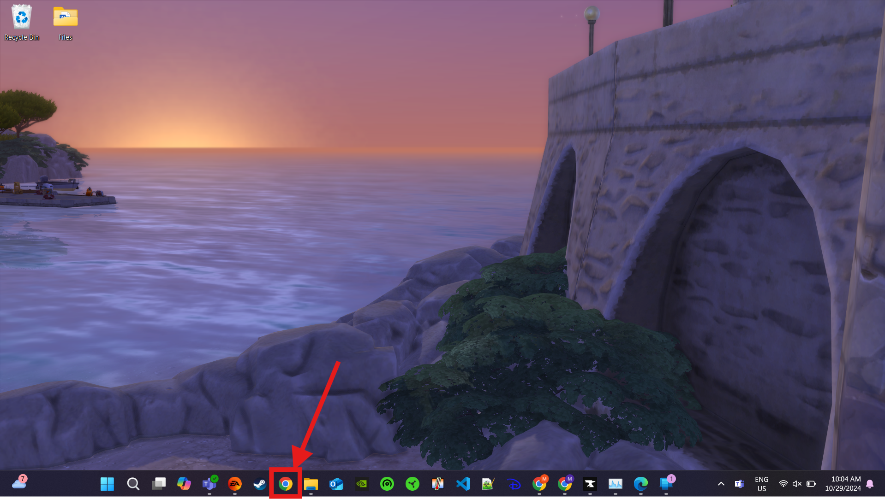
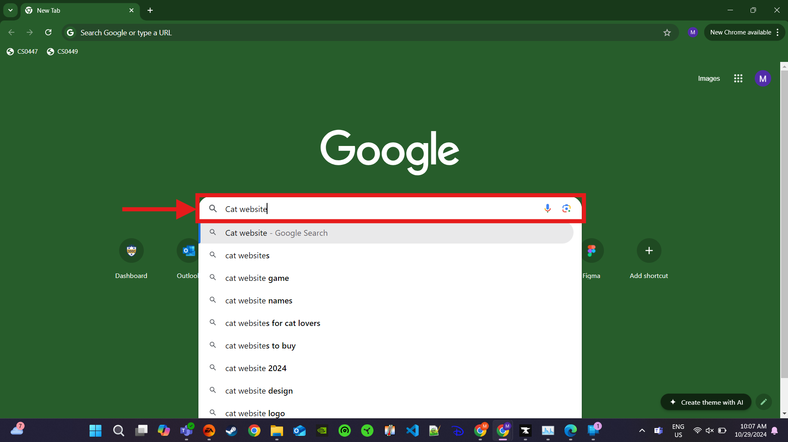
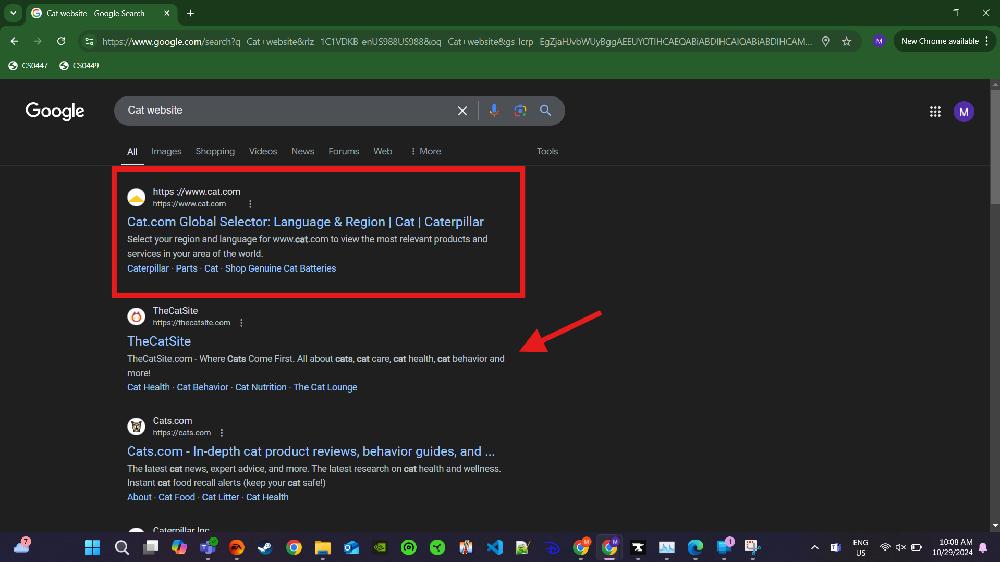
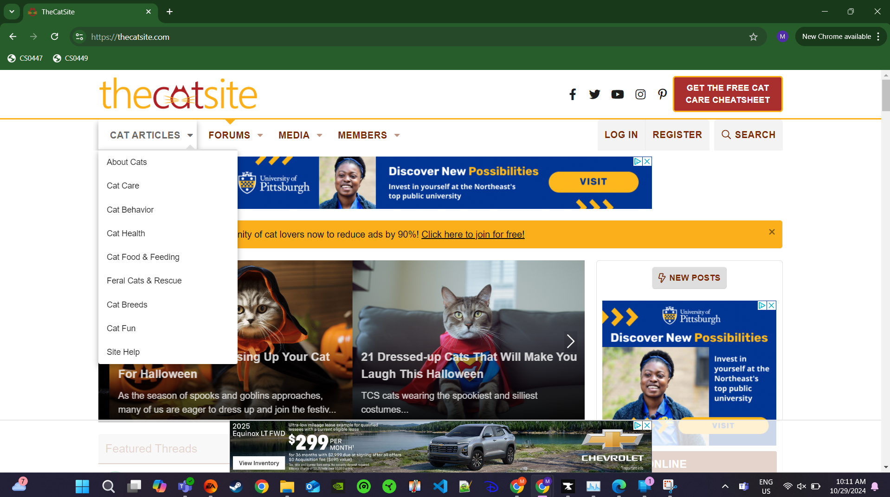
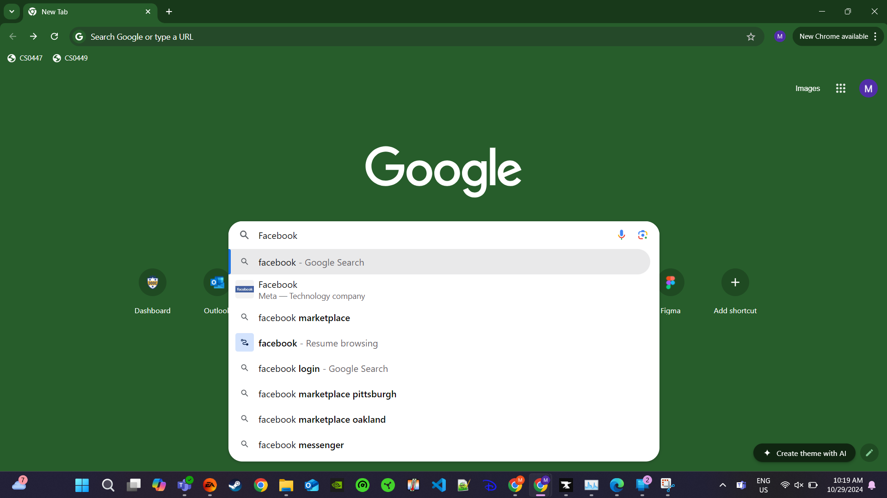
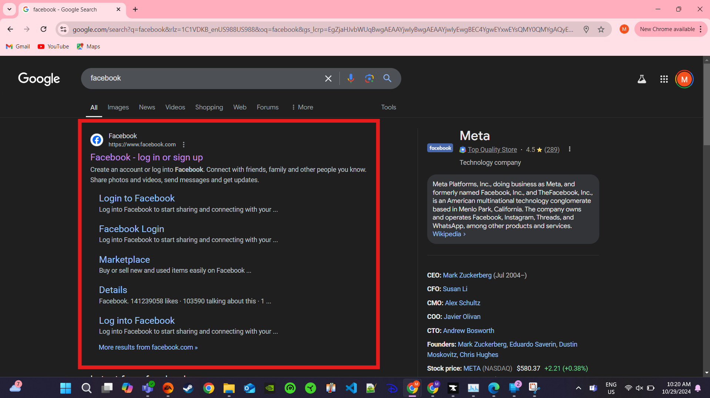
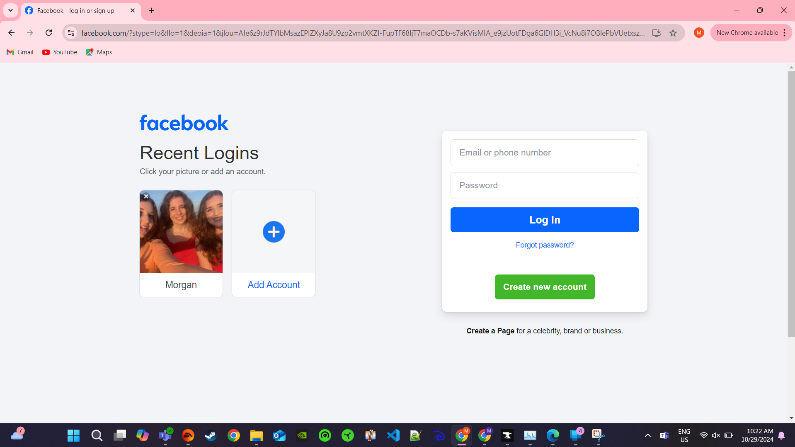
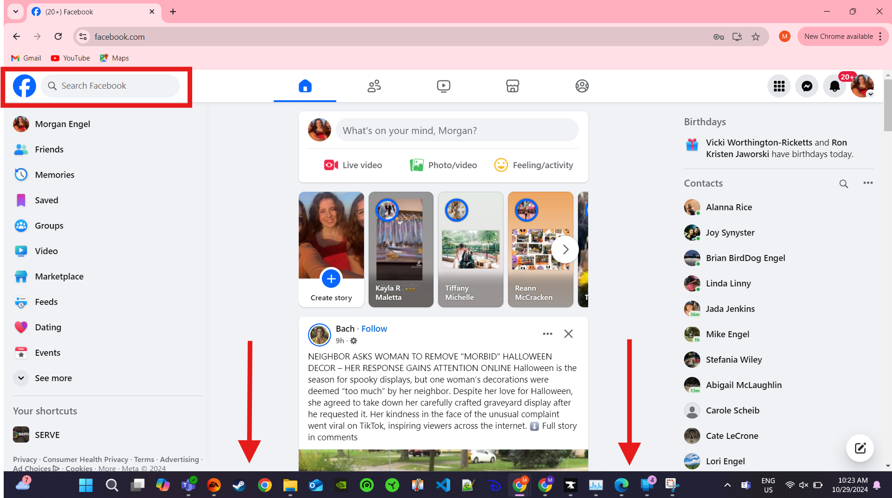

How do you use a website?
How to navigate websites and safety tips to keep yourself safe on them

How to Navigate:
- Once you log into your computer, locate the web browser you prefer (either Google Chrome, Safari, Microsoft Edge, Firefox, etc.) 
- Once you are in the web browser (for this, I will use Google Chrome), you can use the automatic search engine (mine is Google) to look up what you are looking for 
- Once you type in the search, looking at the first results, you can click on the links that say ads, but it is more secure to scroll to those that don’t say ads (personal preference) 
- After loading into the website, typically you will find all of the information that they display at the top of the page in the navigation bar. Sometimes you need to scroll over or click these to find out more information 
- If you would like to navigate to a video, the best website for that would be YouTube. Once you get to Youtube, you can look up the information that you are looking for similar to how you searched in your search engine
- If you would like to see what your family is up to, the best website for that would be Facebook. You might need to set up an account for this, but they normally let you use your Google account to sign in. You can look up people that you and add them as friends to see the updates that they post (you can also download this as an app (more info on the other page)    
After loading the websites, I would not recommend clicking on websites shown like the one in the red box. We can see that the website name has a space where there shouldn’t be and they never changed it from the url of the website. I decided to click on the one that was below it


You can see that the first video that popped up was an advertisement, that isn’t what I was looking for, so I chose the next video instead
You can use the search bar that is in the box to look up the people that you know, or if you already had an account, you can scroll down to see what people you follow have been up to!
Safety:
- Don’t click on links with misspellings! (Google is normally pretty good at avoiding this, but make sure the title is always spelled correctly, especially if you are clicking on links (DO NOT open links from senders that you do not know))
- When checking the address of the website, those that are followed with .edu, .gov, and sometimes .org, are typically reputable websites, while those that are followed with .com, .net, and sometimes .org are easier to get and might be more likely to be an untrustworthy site
- Be wary of websites that ask for a lot of personal information (if you are looking for just an article, the website should not need a bunch of information (maybe your email at most, but they should not need things like your address, credit card information, social security number, etc.))
- If you are suspicious about an online website, you can always just look up the website name to make sure it is credible. You should always do this if you are buying something from the website and are unfamiliar with the brand
- When looking at some websites, some of them might require you to create an account, make sure that you are using secure passwords and don’t use the same one for every website. If you are prone to forgetting your passwords, you can keep a physical book or piece of paper somewhere easily accessible, but not out in the open, with the name of the websites and the passwords you chose for them